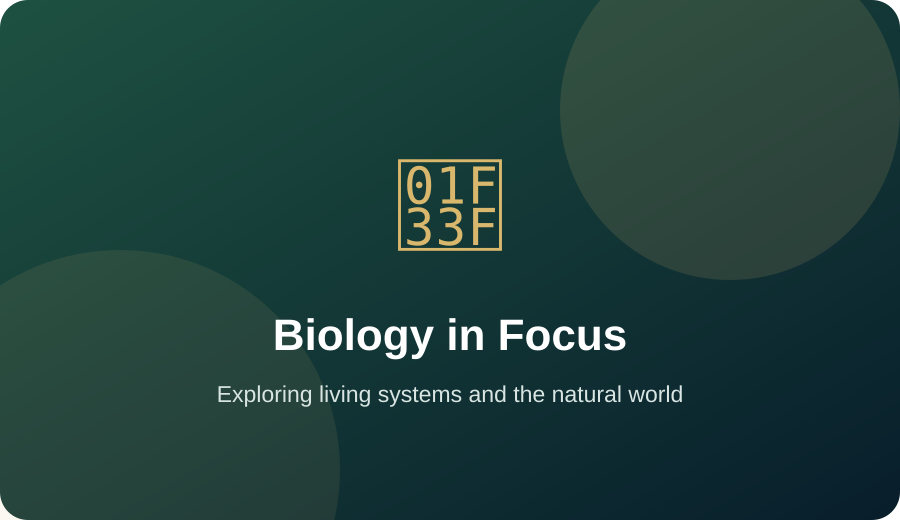

Taekwondo
I enjoy martial arts as a way to develop discipline, concentration, respect and personal confidence. Training also reminds me of the value of patience and consistent practice.
Personal interests create room for balance, creativity, discipline and learning beyond the classroom.
I enjoy martial arts as a way to develop discipline, concentration, respect and personal confidence. Training also reminds me of the value of patience and consistent practice.
Music is an important creative outlet. I enjoy discovering different sounds, studying songwriting and appreciating how melody and words communicate emotion.

Learning about living organisms and the natural world extends beyond lectures. I enjoy asking questions and connecting scientific concepts to everyday life.